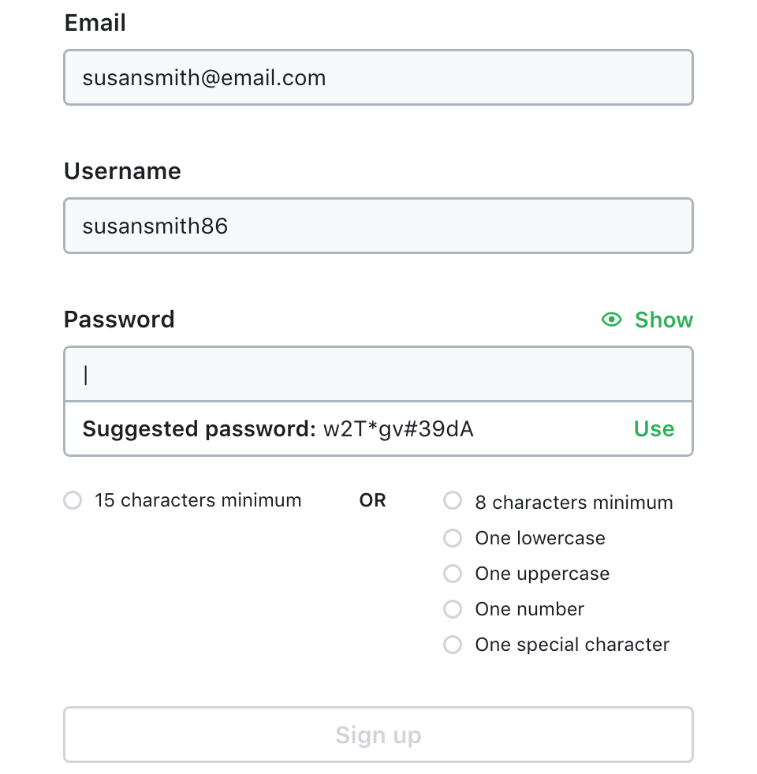
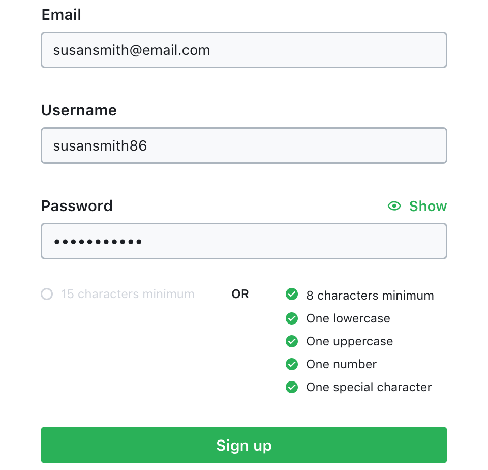

Role
UX, UI, Prototyping
Category
Web
Timeframe
2019
Role
UX, UI, Prototyping
Timeframe
2019
User authentication doesn’t scale well. The more accounts we create, the more passwords we need to remember. In a recent report released by LastPass, nearly half of respondents said they had between one and ten online accounts. Yet research revealed that the average person using a password manager keeps track of almost 200 passwords. It's no wonder then that the top five passwords for 2018 were: 123456, password, 123456789, 12345678, and 12345.
Due to the large number of accounts that require passwords, users employ a variety of methods to handle that complexity. Whether people reuse simple passwords, write passwords in a book, or store random passwords in a password manager — each method has its benefits and drawbacks. Often which strategy someone uses is based on their motivations and beliefs regarding access and security.
67%
of millenials use just one or two passwords because they are afraid of forgetting.
90%
believe their accounts are always at risk, even if they have a strong password.
28%
of user's employ two-factor authentication, and only 44% have even heard of it.
Sources: LastPass - The Psychology of Passwords and Duo Labs - State of the Auth
It’s not only the number of accounts in combination with a user’s beliefs that can cause problems, there is also a fundamental tension between convenience and security. If we design our products for too much convenience, we risk compromising our users' security. However, if we make security a burden for the user, we risk losing user sign ups and engagement or even prevent existing users from accessing our products.
Each time a user signs up for an account they are confronted with the challenge of making a password. During this process they may ask themselves a few questions, such as:
The type of passwords a user creates depends on their behaviours and beliefs. They might choose a common password that they remember, therefore improving the speed and availability of access across different devices. Conversely, they may opt for a higher level of security, but have to complete many steps before being able to use the product.
The first problem this project will explore is the tension between convenience and security. Users may value convenience, which allows ease of access but makes them more vulnerable to being compromised. Others may value security, at the expense of increasing the steps they must take to access their accounts which introduces more failure points.
The second problem I will explore is the low usage of two-factor authentication (2FA). While 2FA methods greatly increase security, most users do not utilise this added layer of protection. People may not know about 2FA or how to set it up to work easily for them. Also, if a user does not have constant access to the method they have chosen — whether email, phone number, or an authenticator app — they might be unable to access their accounts or complete certain transactions.
For this project I decided to follow the Design Thinking methodology. This method ensures that I am basing all of my concepts and design decisions on the needs of real users.
Everyone who uses the internet will have created many accounts, whether for personal or professional use. In an effort to understand the current attitudes and practices in managing online accounts and security, I read a few studies and research papers on this topic. I also conducted some in-person user interviews to gain insight into their behaviours and beliefs regarding the protection of their identity and information online. From these interviews I created three proto-personas in order to better understand the expectations, concerns, and motivations of different types of users.
Proto-persona #1
Demographics
Behaviours and Beliefs
Needs and Goals
Proto-persona #2
Demographics
Behaviours and Beliefs
Needs and Goals
Proto-persona #3
Demographics
Behaviours and Beliefs
Needs and Goals
I also analysed the typical user flows for each of my proto-personas when they are signing into their accounts, so I could more fully understand the different experiences people have depending on how they choose to manage their online profiles and security.
The next phase of my analysis was to define the problems. After synthesising my understanding from my research, I decided to focus on two problems: convenience vs. security and two-factor authentication. From my user research, these two areas stood out as has having the greatest amount of variability in behaviours and beliefs. Therefore, they seemed like good areas to investigate further.
I then used the Jobs To Be Done framework — which includes creating Job Stories with a situation, a motivation, and an expected outcome — to expand on my proto-personas and explore their different wants and needs.
From my research, user interviews, and job stories I then created two How Might We questions:
By sketching out solutions on paper, I could quickly and easily concept different ideas. My main objective was to create a signup form that would allow users quickly create an account while guiding them in making a strong password.
Wireframe concept for signup form.
I created a prototype for my account sign up experience which incorporates my learnings from user research and the recommendations for strong passwords suggested by security experts.
Signup form prototype.
Show inline validation messages.
Suggested password popup.
Check off password requirements.
Show the user's password.
Proposed solution:
I also protoyped a user flow for setting up and using an authenicator app for 2FA. I decided to create a user flow because 2FA requires using multiple services, rather than just several screens on only one website or app. My main objective was to create a common method of using 2FA that could be used for any account, on any device, anywhere in the world.
Proposed solution:
While the ideal would be to require everyone to use strong, randomly generated, unique passwords and 2FA for every account, this isn't realistic. Users have different beliefs and motivations, leading to a wide variety of behaviours. Therefore, as designers, we must think critically about how we create our products, our signup and login flows, and the security settings we provide. As always, our goal is to solve users' problems and meet their needs with the services we provide, balancing convenience with the security and privacy that our users' information requires.
There are also some additional authentication methods that would be worth exploring in the future.
Many websites allow users to authenticate themselves using a social login, providing a frictionless way for users to access services without having to create new accounts. However, when a user connects a social account to another service, they are permitting access to their personal data. For instance, in 2016, many people learned that a popular mobile game had requested and received full access to their Google accounts including email, cloud documents, browsing history, and location data. Therefore, the user must assume responsibility for their own privacy by adjusting their permission settings. Furthermore, users are at a greater risk of being compromised when there is only one password protecting multiple accounts, making it a great option for those who value convenience but not so appealing to users who value their security and privacy.
Another option would be replacing passwords entirely with biometrics, physical tokens, and other passwordless authentication methods. One compelling method is receiving single-use passcodes or links for each sign on, such as Slack's magic links. A user enters their email and then receives a link in their inbox to sign in without using a password. These passwordless methods could be a great combination of both convenience and security.
Even though there are inherent problems with passwords — they are hard to remember, they aren't always secure, and they add friction and frustration — there are many promising improvements and alternatives that are being trialled by some of our favourite apps and websites.
The problem with passwords may never be solved. Exploits will always be found and users may not take necessary steps to protect themselves. However, the design and security communities have the responsibility to investigate the best methods to improve the convenience and security of user authentication.